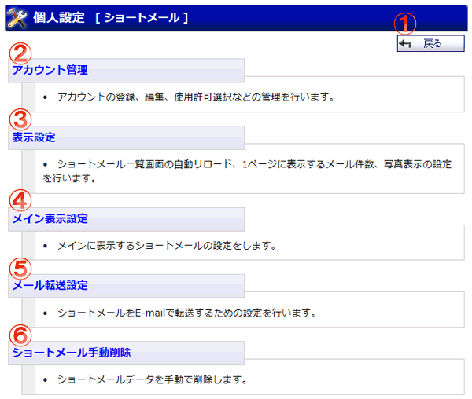

ショートメールの個人設定を行う機能のメニュー画面です。

機能説明
戻るボタンメッセージ一覧画面へ遷移します。 |
アカウント管理アカウントの登録、編集、使用許可選択、ラベル、フィルタなどの管理を行います。 |
|---|---|
表示設定一覧に表示するメール件数・自動リロード時間・写真表示に関する設定を行います。表示設定画面へ遷移します。 |
メイン表示設定メインに表示するショートメールの設定をします。 |
メール転送設定ショートメールをE-mailで転送する際の設定を行います。メール転送設定画面へ遷移します。 |
ショートメール手動削除任意の指定期間を経過したショートメールデータの手動削除を行います。ショートメール手動データ削除画面へ遷移します。 |